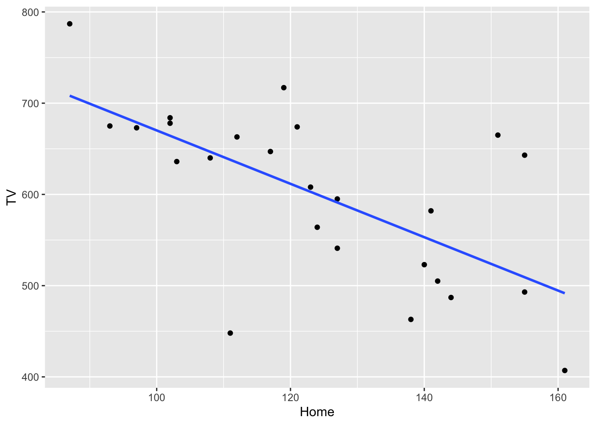

As you complete the handout, please don’t just read the commands, please type every single one of them. This is really important: Learning to program is like practicing a conversation in a new language. You will improve gradually, but only if you practice.
If you’re stuck with something, please write down your questions (to share later in class) and try to solve the problem. Please ask your group members for support and, conversely, if another student is stuck, please try to help them out, too. This way, we develop a supportive learning environment that benefits everybody. In addition, get used to the Help pages in RStudio and start finding solutions online (discussion forums, online textbooks, etc.). This is really important, too. You will only really know how to do quantitative research and statistical analyses when you are doing your own research and dealing with your own data. At that point, you need to be sufficiently autonomous to solve problems, otherwise you will end up making very slow progress in your PhD.
Finally, if you do not complete the handout in class, please complete the handout at home. This is important as we will assume that you know the material covered in this handout. And again, the more you practice the better, so completing these handouts at home is important.
References for this handout
Many of the examples and data files from our class come from these excellent textbooks:
Andrews, M. (2021). Doing data science in R. Sage.
Crawley, M. J. (2013). The R book. Wiley.
Fogarty, B. J. (2019). Quantitative social science data with R. Sage.
Winter, B. (2019). Statistics for linguists. An introduction using R. Routledge.
Task 0: Setting up our environment
You should be able to do all these things, if not - check back on previous week’s content as a reminder
Create a new script and call it Week 8.
Load in the tidyverse library at the top of the script
Task 1: Correlations
Guessing Correlations
First off, let’s play a game of: guess the correlation. Click “track performance” to keep score, and then click “new sample”, take a guess at what the correlation is showing and check your guess. Try out a few. See if you can beat my score of r = .976 over 10 guesses! We will shortly see what the scores mean, but the closer to 1 the better
My attempt at guessing the correlations
Conducting a correlation
First of all, we need some data if we are to conduct an analysis. Download the datafile from Moodle, and read in the MillerHadenData.csv to an object called data.
This data contains five columns: Participant which indicates they are unique observations, reading ability Abil, intelligence measured with IQ, minutes per week spent reading at home Home, and the number of minutes per week spent watching TV at home TV. The participants were 25 eight-year-old children.
data <-read_csv("MillerHadenData.csv")
Rows: 25 Columns: 5
── Column specification ────────────────────────────────────────────────────────
Delimiter: ","
dbl (5): Participant, Abil, IQ, Home, TV
ℹ Use `spec()` to retrieve the full column specification for this data.
ℹ Specify the column types or set `show_col_types = FALSE` to quiet this message.
Take the opportunity to View() the data, or look at a subsection of the data using head(). It is always useful to actually take a look at the data we have, to get an idea of what it contains and its format. Conveniently, the data is in the right format for running the analysis, so we don’t need to do any tidying. On to visualisation.
Can you construct a scatterplot of the relationship between the variables Home and TV? If you can’t remember the code, check back on your week 4 script or worksheet.
Need a hint?
Here’s a code skeleton that might help:
data |>ggplot(aes(...)) +geom_point()
Once you have your scatterplot, we can improve on it by adding a line of best fit, so include + geom_smooth(method = "lm", se = FALSE) to your graph and reproduce it. It should look like below:

What relationship would we expect to find? Is it positive, negative or neutral?
An answer
I would suggest that we have a negative correlation between reading at home and watching tv. As children read more per week, they watch less TV.
Now that we have visualised the data, let us see if it significant and the strength by running a correlation test. We will do this using the cor.test() function. This takes two variables (in this case vectors, so we will use the $ notation) and a couple of other necessary arguments. For our first foray into correlation, I have given you the code and output below.
We specify the two variables we are interested in correlating, and then the type of correlation (in this case Pearson, because both variables are continuous).
cor.test(data$TV, data$Home, method ="pearson")
Pearson's product-moment correlation
data: data$TV and data$Home
t = -4.0766, df = 23, p-value = 0.0004651
alternative hypothesis: true correlation is not equal to 0
95 percent confidence interval:
-0.8303052 -0.3393758
sample estimates:
cor
-0.6476572
The output from the test isn’t exactly the friendliest of things to read, but let’s break it down line by line.
Pearson's product-moment correlation - the title and name fo the test
t = -4.0766, df = 23, p-value = 0.0004651 - this is contains important information about the test result. t is the test statistic (and we don’t typically report this), and is followed by the degrees of freedom (df). Finally, we have the p-value which tells us whether the correlation is significant or not.
alternative hypothesis: true correlation is not equal to 0 - this states the hypothesis that is being tested. Can you guess what the null hypothesis should be?
95 percent confidence interval:-0.8303052 -0.3393758 - this gives us the confidence interval of the correlation. So we expect the true correlation coefficient to fall between these two values 95% of the time. It could be as high as -.34, or as low as -.83.
-0.6476572 And finally the final line is the correlation value, r. The preceding two lines just tell us it’s a correlation.
Awesome. So we have all this information, now we need to translate our R output into something human-readable:
A pearson’s correlation coefficient was used to assess the relationship between time spent reading at home and watching TV. There was a significant negative correlation r(23) = -.65 [-.34, -.83], p < .001. Children who read more at home tend to watch less television.
Does the above make sense? Can you see where the values from the output fit into the table? As a general rule, we report the statistic (r) and then we include the degrees of freedom inside the brackets, we then give the coeffiecient followed by the confidence interval in square brackets, and then the p-value. There are standards as to how we report statistics, and we use the APA format. APA is great because there exists lots of online information on formatting statistics if you need help. Confidence intervals are not always reported, but p values and the coefficient are the key values.
We can actually take our reporting a step further by reporting an additional value that we can comput ourselves. The correlation coefficient tells us how well the two variables relate to each other, but by itself it does not explain how well variable y accounts for differences in x (or vice versa). We can explain this using \(r^2\) (r squared).
Calculating \(r^2\) is actually quite easy; we square r. Squaring removes the sign of the number and gives us a positive number between 0 and 1 which is the percentage of how well X explains Y. So for our example above:
(-0.6476572)^2
[1] 0.4194598
We can say that \(r^2\) = .42 (rounded to 2dp), which is equivalent to 42%. So “42% of the variation in time spent reading is explained by time spent watching TV”. It should be reasonably clear that the higher the correlation coefficient (ignoring the sign), the more it explains because:
(1)^2# == 1, or 100%. A strong positive correlation
[1] 1
(-1)^2# == 1, or 100%. A strong negative correlation
[1] 1
(.1)^2# == .01, or 1%, a very weak positive correlation
[1] 0.01
(-.1)^2# == .01, or 1%, a very weak positive correlation
[1] 0.01
## Just as a fun check in R, we can use the == notation (double equals) to say "is equal to"## If I want to check if one number is equal to another I can do the following(1)^2== (-1)^2
[1] TRUE
## It returns TRUE, meaning that they are exactly the same number. Hopefully that not only highlights that what I'm saying above is true, but also that with more complicated, longer numbers, we can just have R tell us what we need to know(.0304)^2== (-.0304)^2# == 0.00092416, but I don't need to remember that tiny number if R can do it for me. This would explain .09% of the variation.
[1] TRUE
My second correlation
Can you carry out another correlation between IQ and reading? Make a plot, then run the analysis, and interpret the findings. Is the correlation positive, negative, or neither? Is it significant? How much variance is explained?
My third correlation
Now, can you carry out another correlation between IQ and reading? Make a plot, then run the analysis, and interpret the findings. Is the correlation positive, negative, or neither? Is it significant? How much variance is explained?
Task 2: t-tests
Between-Subjects t-tests (two-sample)
First we need to import the data we are working with for this section. These are the files called evaluators.csv and ratings.csv.
This data comes from Schroeder and Epley (2015)1 and, it is the ratings from 39 recruiters from Fortune 500 companies evaluated job pitches of M.B.A. candidates from an American Business School.
evaluators <-read_csv("evaluators.csv")
Rows: 39 Columns: 4
── Column specification ────────────────────────────────────────────────────────
Delimiter: ","
chr (1): condition
dbl (3): eval_id, age, sex
ℹ Use `spec()` to retrieve the full column specification for this data.
ℹ Specify the column types or set `show_col_types = FALSE` to quiet this message.
ratings <-read_csv("ratings.csv")
Rows: 195 Columns: 3
── Column specification ────────────────────────────────────────────────────────
Delimiter: ","
chr (1): Category
dbl (2): eval_id, Rating
ℹ Use `spec()` to retrieve the full column specification for this data.
ℹ Specify the column types or set `show_col_types = FALSE` to quiet this message.
Have a look at the datasets and explore it a bit to get a feel for it. What you should notice is that a) I am talking about one dataset but two files?, and b) both contain a column called eval_id. This dataset contains more information that we want to use today, so let’s tidy up our dataset. I will explain here what we are doing in the same sequence as in the code below, try and match up what I write here to the code lines
create a new dataframe called ratings_intellect -keep only the rows that relate to “competent”, “thoughtful”, “intelligent” so that we can create a composite variable called intellect
group the rows by their unique participant ID
get a mean rating of the three intellect ratings, and
create a new column called Category that contains the word intellect for all rows
This creates a dataframe that is useful for our next steps when we:
Create a new dataframe called ratings_tidy
filter the dataset to keep only data from categories “impression” or “hire”
add the rows from ratings_intellect to ratings_tidy (using bind_rows)
rearrange the dataframe so that it is easier to read, arrange it by id and then category, otherwise the second dataframe (ratings_intellect) would be at the bottom of the dataframe.
Finally, you may have noticed we have only touched one object so far, and that’s ratings, now we want to join it with evaluators to get our final dataset. Provided that two objects share a common variable (e.g., eval_id), we can combine these. We can do this using the function inner_join() which is a new one.
Can we observe what direction of an effect we might see? What condition is associated with higher scores of intellect?
Now we want to check the assumptions of our data, which for a between-subjects t-test are:
The data are continuous, i.e. interval/ratio
The data are independent
The residuals are normally distributed for each group
1 and 2 are true from the study design, and the measures. To test 3, we create what is called a QQ plot. Truly to test the residuals, we calculate the difference of each data point from the mean of each group, so if the mean of group A is 10 and a participant in group A scores 12, the residual for that participant is 2. It basically measn the data left over, that isn’t explained by the group mean. We can also use the raw data as a proxy of the residuals too.
To run a QQ plot, we need a new package. So install and load car, then we need to extract just the values we want and then plot it. With pipes, we can do this all in one.
#install.packages(car) library(car)
Loading required package: carData
Attaching package: 'car'
The following object is masked from 'package:dplyr':
recode
The following object is masked from 'package:purrr':
some
What we are looking for is the data to fall along the diagonal line as best as possible. Looks good to me.
We can actually test the normality distribution using a statistic, but we will save it for next week. For now, be satisified that we have met our assumptions
So, finally, on to our t-test! For this, we need to split out our data to ensure we are running the t-test on one category at a time. Here, I will only test the difference for intellect, and then you can rerun the process on impression and hire too.
#filter only the intellect ratingsintellect <-filter(ratings_tidy, Category =="intellect")t.test(Rating ~ condition,data = intellect,paired =FALSE,alternative ="two.sided")
Welch Two Sample t-test
data: Rating by condition
t = 3.4787, df = 33.434, p-value = 0.001421
alternative hypothesis: true difference in means between group listened and group read is not equal to 0
95 percent confidence interval:
0.8253765 3.1481685
sample estimates:
mean in group listened mean in group read
5.634921 3.648148
The output looks quite similar to when we ran a correlation, so it should be familiar-ish. We can tidy this up a bit, so it’s easier to read using the tidy() function from broom. So install and load broom if needed
con.low and conf.high are the confidence interval of the estimate
method is the type of test, Welch’s, Student’s, paired, or one-sample
alternative is whether the test was one or two-tailed
Now, can you repeat the steps above to compute the t-test for the categories ‘impression’ and ‘hire’?
Hopefully, you have ended up with three objects, one called ttest_intellect, another called ttest_impression, and the last called ttest_hire. Let’s combine these for easier reading
We aren’t quite finished yet, because we have something new to consider, as well as effect sizes.
Multiple Comparisons
Since we ran three tests on the same data, we increase our chances of detecting a false positive (a significant effect where one doesn’t exist), so we must adjust our p-value to reflect this. We can do this relatively simply. We will update our results object to show the adjusted p-value
results_adj <- results |>mutate(p.adj =p.adjust(p.value, method ="bonferroni"), .after = p.value) # .after tells R where to put the new column
Finally, let’s compute the effect size and add this to our table of findings. For this we need yet another package called effectsize - you know the drill, install if needed and load it in.
For t-tests, we use Cohen’s D and as a general rule, we can interpret the output as:
Small effect = 0.2
Medium Effect = 0.5
Large Effect = 0.8
library(effectsize)intellect_d <-cohens_d(Rating ~ condition, pooled_sd =FALSE, data = intellect)impression_d <-cohens_d(Rating ~ condition, pooled_sd =FALSE, data = impression)hire_d <-cohens_d(Rating ~ condition, pooled_sd =FALSE, data = hire)#now add them to the tableresults_adj <- results_adj |>mutate(d =c(intellect_d$Cohens_d, impression_d$Cohens_d, hire_d$Cohens_d))results_adj
We can now use these new p-values, and effect sizes to determine the significance of these three ratings. p values tell us if the findings are significant, the effect size tells us how much of a real-world effect they are likely to have
Combined with the visualisations we should have carried out, how would we interpret our findings?
Let me do intellect as an example:
To test whether professional recruiters’ rated the presenter’s intellect differently between listening (mean = 5.63, SD = 1.61) and reading (mean = 3.65, SD = 1.91), a significant difference was seen, t(33.43) = 1.99, p = .004, d = 1.12 with presenters rated higher in intellect than in the reading condition.
Can you interpret the other two?
Within-subjects
This one we will go through more quickly, with a lot of the work being repetitive of the above, but we run a within-subjects when participants complete both groups. Same people, different conditions.
For this we will be using another dataset, this time from the psychological sciences. Let’s look at the effect of behaviour automaticity using the Stroop task. You can try the Stroop yourself here
The stroop task is one of the best known psychological experiments named after John Ridley Stroop. The Stroop phenomenon demonstrates that it is difficult to name the ink color of a color word if there is a mismatch between ink color and word. For example, the word GREEN printed in red ink.
Load in the stroop data and have a look
stroop <-read_csv("stroop_wk8.csv")
Rows: 369 Columns: 4
── Column specification ────────────────────────────────────────────────────────
Delimiter: ","
chr (1): condition
dbl (3): pID, time, avg_time
ℹ Use `spec()` to retrieve the full column specification for this data.
ℹ Specify the column types or set `show_col_types = FALSE` to quiet this message.
We should see that pID (participant ID) is repeated 3 times, one for each condition, and they then have a time for each, and an average time across all three conditions.
That’s a funny looking plot, why is everything pushed way down? Looks like outliers! In this task, responses should be relatively swift (think back five minutes when you took the test, it is in the order of single seconds), but some people took a long time. Let’s filter out these outliers to keep only participants whose average time was under 12 seconds.
Much better! Looks like we can expect some kind of effect by eyeballing the plot, but let’s check it more properly.
To do this, we will first summarise the mean time taken by each condition in the Stroop task. In Week 3 we learnt how to use group_by() and summarise() to get summary stats (e.g., mean, sd) at each level of the IV. That’s what we want to do now:
Copy the code below inton and edit the group_by() line to specify the IV and the summarise() line to calculate the mean() of our DV. If you do this correctly, you’ll get three values - a mean value for each level (condition) of our IV. Do these means reflect what you would expect in the Stroop task? Do they match the central tendency of the distributions you plotted?
stroop_filter %>%group_by(name_of_IV_column) %>%# you need to EDIT this for Q1summarise(stroop_mean =mean(name_of_DV_column)) # you need to EDIT this for Q1
# A tibble: 3 × 2
condition stroop_mean
<chr> <dbl>
1 compatible 4.22
2 control 5.69
3 incompatible 7.28
We now need to filter our code to contain only two of the conditions, because a t-test only examines two groups. Let’s look at the differences between compatible and incompatible.
Paired t-test
data: time by condition
t = -18.257, df = 119, p-value < 2.2e-16
alternative hypothesis: true mean difference is not equal to 0
95 percent confidence interval:
-3.39021 -2.72679
sample estimates:
mean difference
-3.0585
And Cohen’s D
cohens_d(time ~ condition, pooled_sd =FALSE, data = stroop_comparison)
Cohen's d | 95% CI
--------------------------
-1.65 | [-1.96, -1.35]
- Estimated using un-pooled SD.
Is our finding significant? What does the effect size tell us? How would we report and interpret our findings?
Can you do the same t-test for the other possible group combinations? Don’t forget to conduct the multiple comparisons adjustment for the p-values.
Footnotes
Schroeder, J., & Epley, N. (2015). The sound of intellect: Speech reveals a thoughtful mind, increasing a job candidate’s appeal. Psychological science, 26(6), 877-891.↩︎